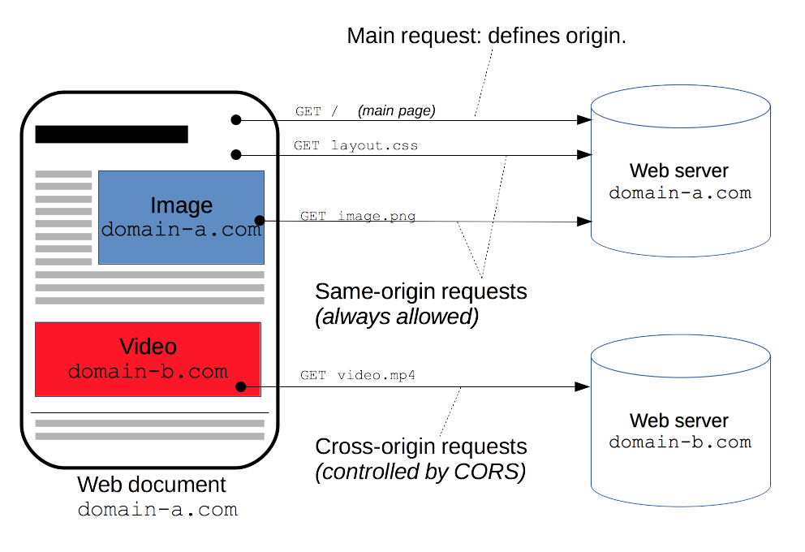
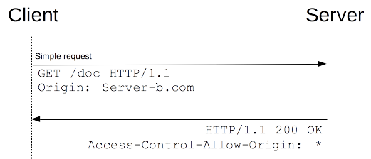

A resource makes a cross-origin HTTP request when it requests a resource from a different domain than the one which the first resource itself serves. For example, an HTML page served from http://domain-a.com makes an <img> src request for http://domain-b.com/image.jpg. Many pages on the web today load resources like CSS stylesheets, images and scripts from separate domains.
For security reasons, browsers restrict cross-origin HTTP requests initiated from within scripts. For example, {{domxref("XMLHttpRequest")}} and Fetch follow the same-origin policy. So, a web application using {{domxref("XMLHttpRequest")}} or Fetch could only make HTTP requests to its own domain. To improve web applications, developers asked browser vendors to allow cross-domain requests.

The Cross-Origin Resource Sharing ({{Glossary("CORS")}}) mechanism gives web servers cross-domain access controls, which enable secure cross-domain data transfers. Modern browsers use CORS in an API container - such as {{domxref("XMLHttpRequest")}} or Fetch - to mitigate risks of cross-origin HTTP requests.
This article is for web administrators, server developers and front-end developers. Modern browsers handle the client-side components of cross-origin sharing, including headers and policy enforcement. But this new standard means servers have to handle new request and response headers. Another article for server developers discussing cross-origin sharing from a server perspective (with PHP code snippets) is supplementary reading.
This cross-origin sharing standard is used to enable cross-site HTTP requests for:
- Invocations of the {{domxref("XMLHttpRequest")}} or Fetch APIs in a cross-site manner, as discussed above.
- Web Fonts (for cross-domain font usage in
@font-facewithin CSS), so that servers can deploy TrueType fonts that can only be cross-site loaded and used by web sites that are permitted to do so. - WebGL textures.
- Images/video frames drawn to a canvas using
drawImage. - Stylesheets (for CSSOM access).
- Scripts (for unmuted exceptions).
This article is a general discussion of Cross-Origin Resource Sharing, and includes a discussion of the necessary HTTP headers.
Overview
The Cross-Origin Resource Sharing standard works by adding new HTTP headers that allow servers to describe the set of origins that are permitted to read that information using a web browser. Additionally, for HTTP request methods that can cause side-effects on user data (in particular, for HTTP methods other than {{HTTPMethod("GET")}}, or for {{HTTPMethod("POST")}} usage with certain MIME types), the specification mandates that browsers "preflight" the request, soliciting supported methods from the server with an HTTP {{HTTPMethod("OPTIONS")}} request method, and then, upon "approval" from the server, sending the actual request with the actual HTTP request method. Servers can also notify clients whether "credentials" (including Cookies and HTTP Authentication data) should be sent with requests.
Subsequent sections discuss scenarios, as well as provide a breakdown of the HTTP headers used.
Examples of access control scenarios
Here, we present three scenarios that illustrate how Cross-Origin Resource Sharing works. All of these examples use the {{domxref("XMLHttpRequest")}} object, which can be used to make cross-site invocations in any supporting browser.
The JavaScript snippets included in these sections (and running instances of the server-code that correctly handles these cross-site requests) can be found "in action" here, and will work in browsers that support cross-site {{domxref("XMLHttpRequest")}}. A discussion of Cross-Origin Resource Sharing from a server perspective (including PHP code snippets) can be found here.
Simple requests
A simple cross-site request is one that meets all the following conditions:
- The only allowed methods are:
- {{HTTPMethod("GET")}}
- {{HTTPMethod("HEAD")}}
- {{HTTPMethod("POST")}}
- Apart from the headers set automatically by the user agent (e.g. {{HTTPHeader("Connection")}}, {{HTTPHeader("User-Agent")}}, etc.), the only headers which are allowed to be manually set are:
- {{HTTPHeader("Accept")}}
- {{HTTPHeader("Accept-Language")}}
- {{HTTPHeader("Content-Language")}}
- {{HTTPHeader("Content-Type")}}
- The only allowed values for the
Content-Typeheader are:application/x-www-form-urlencodedmultipart/form-datatext/plain
For example, suppose web content on domain http://foo.example wishes to invoke content on domain http://bar.other. Code of this sort might be used within JavaScript deployed on foo.example:
var invocation = new XMLHttpRequest();
var url = 'http://bar.other/resources/public-data/';
function callOtherDomain() {
if(invocation) {
invocation.open('GET', url, true);
invocation.onreadystatechange = handler;
invocation.send();
}
}
This will lead to a simple exchange between the client and the server, using CORS headers to handle the privileges:

Let us look at what the browser will send the server in this case, and let's see how the server responds:
GET /resources/public-data/ HTTP/1.1 Host: bar.other User-Agent: Mozilla/5.0 (Macintosh; U; Intel Mac OS X 10.5; en-US; rv:1.9.1b3pre) Gecko/20081130 Minefield/3.1b3pre Accept: text/html,application/xhtml+xml,application/xml;q=0.9,*/*;q=0.8 Accept-Language: en-us,en;q=0.5 Accept-Encoding: gzip,deflate Accept-Charset: ISO-8859-1,utf-8;q=0.7,*;q=0.7 Connection: keep-alive Referer: http://foo.example/examples/access-control/simpleXSInvocation.html Origin: http://foo.example HTTP/1.1 200 OK Date: Mon, 01 Dec 2008 00:23:53 GMT Server: Apache/2.0.61 Access-Control-Allow-Origin: * Keep-Alive: timeout=2, max=100 Connection: Keep-Alive Transfer-Encoding: chunked Content-Type: application/xml [XML Data]
Lines 1 - 10 are headers sent. Note that the main HTTP request header of note here is the {{HTTPHeader("Origin")}} header on line 10 above, which shows that the invocation is coming from content on the the domain http://foo.example.
Lines 13 - 22 show the HTTP response from the server on domain http://bar.other. In response, the server sends back an {{HTTPHeader("Access-Control-Allow-Origin")}} header, shown above in line 16. The use of the {{HTTPHeader("Origin")}} header and of {{HTTPHeader("Access-Control-Allow-Origin")}} show the access control protocol in its simplest use. In this case, the server responds with a Access-Control-Allow-Origin: * which means that the resource can be accessed by any domain in a cross-site manner. If the resource owners at http://bar.other wished to restrict access to the resource to be only from http://foo.example, they would send back:
Access-Control-Allow-Origin: http://foo.example
Note that now, no domain other than http://foo.example (identified by the ORIGIN: header in the request, as in line 10 above) can access the resource in a cross-site manner. The Access-Control-Allow-Origin header should contain the value that was sent in the request's Origin header.
Preflighted requests
Unlike simple requests (discussed above), "preflighted" requests first send an HTTP request by the {{HTTPMethod("OPTIONS")}} method to the resource on the other domain, in order to determine whether the actual request is safe to send. Cross-site requests are preflighted like this since they may have implications to user data. In particular, a request is preflighted if:
- It uses methods other than
GET,HEADorPOST. Also, ifPOSTis used to send request data with a Content-Type other thanapplication/x-www-form-urlencoded,multipart/form-data, ortext/plain, e.g. if thePOSTrequest sends an XML payload to the server usingapplication/xmlortext/xml, then the request is preflighted. - It sets custom headers in the request (e.g. the request uses a header such as
X-PINGOTHER)
An example of this kind of invocation might be:
var invocation = new XMLHttpRequest();
var url = 'http://bar.other/resources/post-here/';
var body = '<?xml version="1.0"?><person><name>Arun</name></person>';
function callOtherDomain(){
if(invocation)
{
invocation.open('POST', url, true);
invocation.setRequestHeader('X-PINGOTHER', 'pingpong');
invocation.setRequestHeader('Content-Type', 'application/xml');
invocation.onreadystatechange = handler;
invocation.send(body);
}
}
......
In the example above, line 3 creates an XML body to send with the POST request in line 8. Also, on line 9, a "customized" (non-standard) HTTP request header is set (X-PINGOTHER: pingpong). Such headers are not part of the HTTP/1.1 protocol, but are generally useful to web applications. Since the request (POST) uses a Content-Type of application/xml, and since a custom header is set, this request is preflighted.

Let's take a look at the full exchange between client and server. The first exchange is the preflight request/response:
OPTIONS /resources/post-here/ HTTP/1.1 Host: bar.other User-Agent: Mozilla/5.0 (Macintosh; U; Intel Mac OS X 10.5; en-US; rv:1.9.1b3pre) Gecko/20081130 Minefield/3.1b3pre Accept: text/html,application/xhtml+xml,application/xml;q=0.9,*/*;q=0.8 Accept-Language: en-us,en;q=0.5 Accept-Encoding: gzip,deflate Accept-Charset: ISO-8859-1,utf-8;q=0.7,*;q=0.7 Connection: keep-alive Origin: http://foo.example Access-Control-Request-Method: POST Access-Control-Request-Headers: X-PINGOTHER, Content-Type HTTP/1.1 200 OK Date: Mon, 01 Dec 2008 01:15:39 GMT Server: Apache/2.0.61 (Unix) Access-Control-Allow-Origin: http://foo.example Access-Control-Allow-Methods: POST, GET, OPTIONS Access-Control-Allow-Headers: X-PINGOTHER, Content-Type Access-Control-Max-Age: 86400 Vary: Accept-Encoding, Origin Content-Encoding: gzip Content-Length: 0 Keep-Alive: timeout=2, max=100 Connection: Keep-Alive Content-Type: text/plain
Once the preflight request is complete, the real request is sent:
POST /resources/post-here/ HTTP/1.1 Host: bar.other User-Agent: Mozilla/5.0 (Macintosh; U; Intel Mac OS X 10.5; en-US; rv:1.9.1b3pre) Gecko/20081130 Minefield/3.1b3pre Accept: text/html,application/xhtml+xml,application/xml;q=0.9,*/*;q=0.8 Accept-Language: en-us,en;q=0.5 Accept-Encoding: gzip,deflate Accept-Charset: ISO-8859-1,utf-8;q=0.7,*;q=0.7 Connection: keep-alive X-PINGOTHER: pingpong Content-Type: text/xml; charset=UTF-8 Referer: http://foo.example/examples/preflightInvocation.html Content-Length: 55 Origin: http://foo.example Pragma: no-cache Cache-Control: no-cache <?xml version="1.0"?><person><name>Arun</name></person> HTTP/1.1 200 OK Date: Mon, 01 Dec 2008 01:15:40 GMT Server: Apache/2.0.61 (Unix) Access-Control-Allow-Origin: http://foo.example Vary: Accept-Encoding, Origin Content-Encoding: gzip Content-Length: 235 Keep-Alive: timeout=2, max=99 Connection: Keep-Alive Content-Type: text/plain [Some GZIP'd payload]
Lines 1 - 12 above represent the preflight request with the {{HTTPMethod("OPTIONS")}} method. The browser determines that it needs to send this based on the request parameters that the JavaScript code snippet above was using, so that the server can respond whether it is acceptable to send the request with the actual request parameters. OPTIONS is an HTTP/1.1 method that is used to determine further information from servers, and is an idempotent method, meaning that it can't be used to change the resource. Note that along with the OPTIONS request, two other request headers are sent (lines 10 and 11 respectively):
Access-Control-Request-Method: POST Access-Control-Request-Headers: X-PINGOTHER, Content-Type
The {{HTTPHeader("Access-Control-Request-Method")}} header notifies the server as part of a preflight request that when the actual request is sent, it will be sent with a POST request method. The {{HTTPHeader("Access-Control-Request-Headers")}} header notifies the server that when the actual request is sent, it will be sent with a X-PINGOTHER and Content-Type custom headers. The server now has an opportunity to determine whether it wishes to accept a request under these circumstances.
Lines 14 - 26 above are the response that the server sends back indicating that the request method (POST) and request headers (X-PINGOTHER) are acceptable. In particular, let's look at lines 17-20:
Access-Control-Allow-Origin: http://foo.example Access-Control-Allow-Methods: POST, GET, OPTIONS Access-Control-Allow-Headers: X-PINGOTHER, Content-Type Access-Control-Max-Age: 86400
The server responds with Access-Control-Allow-Methods and says that POST, GET, and OPTIONS are viable methods to query the resource in question. Note that this header is similar to the {{HTTPHeader("Allow")}} response header, but used strictly within the context of access control.
The server also sends Access-Control-Allow-Headers with a value of "X-PINGOTHER, Content-Type", confirming that these are permitted headers to be used with the actual request. Like Access-Control-Allow-Methods, Access-Control-Allow-Headers is a comma separated list of acceptable headers.
Finally, {{HTTPHeader("Access-Control-Max-Age")}} gives the value in seconds for how long the response to the preflight request can be cached for without sending another preflight request. In this case, 86400 seconds is 24 hours. Note that each browser has a maximum internal value that takes precedence when the Access-Control-Max-Age is greater.
Requests with credentials
The most interesting capability exposed by both {{domxref("XMLHttpRequest")}} or Fetch and CORS is the ability to make "credentialed" requests that are aware of HTTP cookies and HTTP Authentication information. By default, in cross-site {{domxref("XMLHttpRequest")}} or Fetch invocations, browsers will not send credentials. A specific flag has to be set on the {{domxref("XMLHttpRequest")}} object or the {{domxref("Request")}} constructor when it is invoked.
In this example, content originally loaded from http://foo.example makes a simple GET request to a resource on http://bar.other which sets Cookies. Content on foo.example might contain JavaScript like this:
var invocation = new XMLHttpRequest();
var url = 'http://bar.other/resources/credentialed-content/';
function callOtherDomain(){
if(invocation) {
invocation.open('GET', url, true);
invocation.withCredentials = true;
invocation.onreadystatechange = handler;
invocation.send();
}
}
Line 7 shows the flag on {{domxref("XMLHttpRequest")}} that has to be set in order to make the invocation with Cookies, namely the withCredentials boolean value. By default, the invocation is made without Cookies. Since this is a simple GET request, it is not preflighted, but the browser will reject any response that does not have the {{HTTPHeader("Access-Control-Allow-Credentials")}}: true header, and not make the response available to the invoking web content.

Here is a sample exchange between client and server:
GET /resources/access-control-with-credentials/ HTTP/1.1 Host: bar.other User-Agent: Mozilla/5.0 (Macintosh; U; Intel Mac OS X 10.5; en-US; rv:1.9.1b3pre) Gecko/20081130 Minefield/3.1b3pre Accept: text/html,application/xhtml+xml,application/xml;q=0.9,*/*;q=0.8 Accept-Language: en-us,en;q=0.5 Accept-Encoding: gzip,deflate Accept-Charset: ISO-8859-1,utf-8;q=0.7,*;q=0.7 Connection: keep-alive Referer: http://foo.example/examples/credential.html Origin: http://foo.example Cookie: pageAccess=2 HTTP/1.1 200 OK Date: Mon, 01 Dec 2008 01:34:52 GMT Server: Apache/2.0.61 (Unix) PHP/4.4.7 mod_ssl/2.0.61 OpenSSL/0.9.7e mod_fastcgi/2.4.2 DAV/2 SVN/1.4.2 X-Powered-By: PHP/5.2.6 Access-Control-Allow-Origin: http://foo.example Access-Control-Allow-Credentials: true Cache-Control: no-cache Pragma: no-cache Set-Cookie: pageAccess=3; expires=Wed, 31-Dec-2008 01:34:53 GMT Vary: Accept-Encoding, Origin Content-Encoding: gzip Content-Length: 106 Keep-Alive: timeout=2, max=100 Connection: Keep-Alive Content-Type: text/plain [text/plain payload]
Although line 11 contains the Cookie destined for the content on http://bar.other, if bar.other did not respond with an {{HTTPHeader("Access-Control-Allow-Credentials")}}: true (line 19) the response would be ignored and not made available to web content.
Important note: when responding to a credentialed request, server must specify a domain, and cannot use wild carding. The above example would fail if the header was wildcarded as: Access-Control-Allow-Origin: *. Since the Access-Control-Allow-Origin explicitly mentions http://foo.example, the credential-cognizant content is returned to the invoking web content. Note that in line 22, a further cookie is set. In case of failure, an exception, depending on the API used, is raised.
All of these examples can be seen working here. The next section deals with the actual HTTP headers.
The HTTP response headers
This section lists the HTTP response headers that servers send back for access control requests as defined by the Cross-Origin Resource Sharing specification. The previous section gives an overview of these in action.
Access-Control-Allow-Origin
A returned resource may have one {{HTTPHeader("Access-Control-Allow-Origin")}} header, with the following syntax:
Access-Control-Allow-Origin: <origin> | *
The origin parameter specifies a URI that may access the resource. The browser must enforce this. For requests without credentials, the server may specify "*" as a wildcard, thereby allowing any origin to access the resource.
For example, to allow http://mozilla.org to access the resource, you can specify:
Access-Control-Allow-Origin: http://mozilla.org
If the server specifies an origin host rather than "*", then it must also include Origin in the Vary response header to indicate to clients that server responses will differ based on the value of the Origin request header.
Access-Control-Expose-Headers
The {{HTTPHeader("Access-Control-Expose-Headers")}} header lets a server whitelist headers that browsers are allowed to access. For example:
Access-Control-Expose-Headers: X-My-Custom-Header, X-Another-Custom-Header
This allows the X-My-Custom-Header and X-Another-Custom-Header headers to be exposed to the browser.
Access-Control-Max-Age
The {{HTTPHeader("Access-Control-Max-Age")}} header indicates how long the results of a preflight request can be cached. For an example of a preflight request, see the above examples.
Access-Control-Max-Age: <delta-seconds>
The delta-seconds parameter indicates the number of seconds the results can be cached.
Access-Control-Allow-Credentials
The {{HTTPHeader("Access-Control-Allow-Credentials")}} header Indicates whether or not the response to the request can be exposed when the credentials flag is true. When used as part of a response to a preflight request, this indicates whether or not the actual request can be made using credentials. Note that simple GET requests are not preflighted, and so if a request is made for a resource with credentials, if this header is not returned with the resource, the response is ignored by the browser and not returned to web content.
Access-Control-Allow-Credentials: true
Credentialed requests are discussed above.
Access-Control-Allow-Methods
The {{HTTPHeader("Access-Control-Allow-Methods")}} header specifies the method or methods allowed when accessing the resource. This is used in response to a preflight request. The conditions under which a request is preflighted are discussed above.
Access-Control-Allow-Methods: <method>[, <method>]*
An example of a preflight request is given above, including an example which sends this header to the browser.
Access-Control-Allow-Headers
The {{HTTPHeader("Access-Control-Allow-Headers")}} header is used in response to a preflight request to indicate which HTTP headers can be used when making the actual request.
Access-Control-Allow-Headers: <field-name>[, <field-name>]*
The HTTP request headers
This section lists headers that clients may use when issuing HTTP requests in order to make use of the cross-origin sharing feature. Note that these headers are set for you when making invocations to servers. Developers using cross-site {{domxref("XMLHttpRequest")}} capability do not have to set any cross-origing sharing request headers programmatically.
Origin
The {{HTTPHeader("Origin")}} header indicates the origin of the cross-site access request or preflight request.
Origin: <origin>
The origin is a URI indicating the server from which the request initiated. It does not include any path information, but only the server name.
origin can be the empty string; this is useful, for example, if the source is a data URL.Note that in any access control request, the {{HTTPHeader("Origin")}} header is always sent.
Access-Control-Request-Method
The {{HTTPHeader("Access-Control-Request-Method")}} is used when issuing a preflight request to let the server know what HTTP method will be used when the actual request is made.
Access-Control-Request-Method: <method>
Examples of this usage can be found above.
Access-Control-Request-Headers
The {{HTTPHeader("Access-Control-Request-Headers")}} header is used when issuing a preflight request to let the server know what HTTP headers will be used when the actual request is made.
Access-Control-Request-Headers: <field-name>[, <field-name>]*
Examples of this usage can be found above.
Specifications
| Specification | Status | Comment |
|---|---|---|
| {{SpecName('Fetch', '#cors-protocol', 'CORS')}} | {{Spec2('Fetch')}} | New definition; supplants CORS specification. |
| {{SpecName('CORS')}} | {{Spec2('CORS')}} | Initial definition. |
Browser compatibility
{{CompatibilityTable}}
| Feature | Chrome | Firefox (Gecko) | Internet Explorer | Opera | Safari |
|---|---|---|---|---|---|
| Basic support | 4 | 3.5 | 8 (via XDomainRequest) 10 |
12 | 4 |
| Feature | Android | Chrome for Android | Firefox Mobile (Gecko) | IE Mobile | Opera Mobile | Safari Mobile |
|---|---|---|---|---|---|---|
| Basic support | 2.1 | yes | yes | {{CompatUnknown}} | 12 | 3.2 |
Compatibility notes
- Internet Explorer 8 and 9 expose CORS via the
XDomainRequestobject, but have a full implementation in IE 10. - While Firefox 3.5 introduced support for cross-site XMLHttpRequests and Web Fonts, certain requests were limited until later versions. Specifically, Firefox 7 introduced the ability for cross-site HTTP requests for WebGL Textures, and Firefox 9 added support for Images drawn on a canvas using
drawImage.